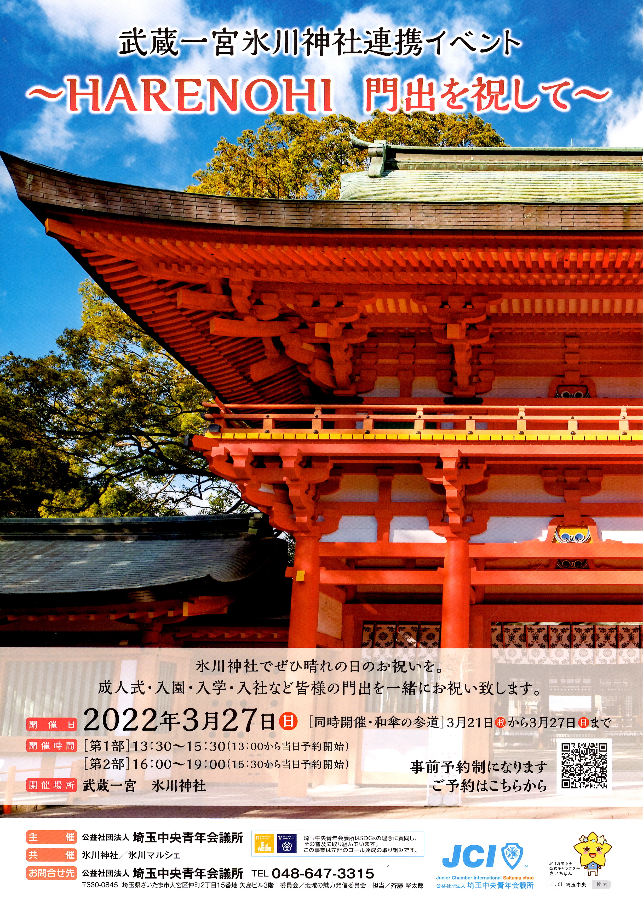
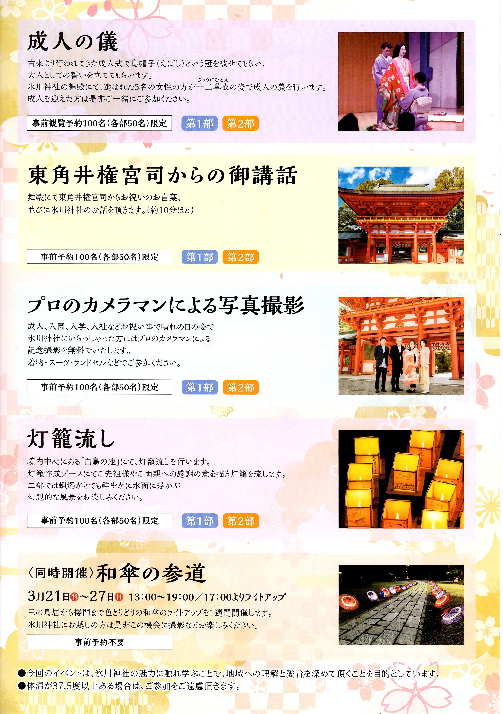

お知らせ
春の特別紙朱印「花しずめ」
限定お守「咲守」
おみくじ「さくら」のお知らせ
令和4年3月18日
3月19日より春の特別紙朱印「花しずめ」を授与致します。
数量限定につき、お一人様1枚の授与、初穂料は500円です。
「咲守（さきまもり）」も同様に数量限定につき、お一人様1体の授与、初穂料は1000円です。
コロナ禍により来社出来ない方には、郵送でのお申し込みを承ります。
郵送希望の紙朱印は通常の紙朱印になります。
また、おみくじの色が19日より薄い桃色と濃い桃色の「さくら」になります。
特別大祈祷のご案内
令和4年3月18日
事前予約制になりますが、下記にて本殿単独祈祷を承ります。
ご希望される方は神社までご連絡願います。
-
一、 初 穂 料１０万円以上「神楽奉奏（巫女舞）は別途３万円」
-
一、祈 願一願種のみ
-
一、神 札特別大祈祷札（50㎝）・特別祈祷札（48㎝）・大祈祷札（35㎝）・小祈祷札（30㎝）より御希望神札一体授与
-
一、人 数８０名まで
-
一、玉串拝礼代表者３名まで
-
一、 要 予 約詳細は来社のうえ打合せ
-
連絡先氷川神社
電話 （048）641-0137
FAX （048）647-1213
記
公益社団法人埼玉中央青年会議所による人生の門出お祝いイベントが開催されます
令和4年3月14日
３月２７日（日）公益社団法人埼玉中央青年会議所主催の門出お祝いイベントが開催されます。


お問い合わせは埼玉中央青年会議所までお願い致します。
電話番号 048－647－3315